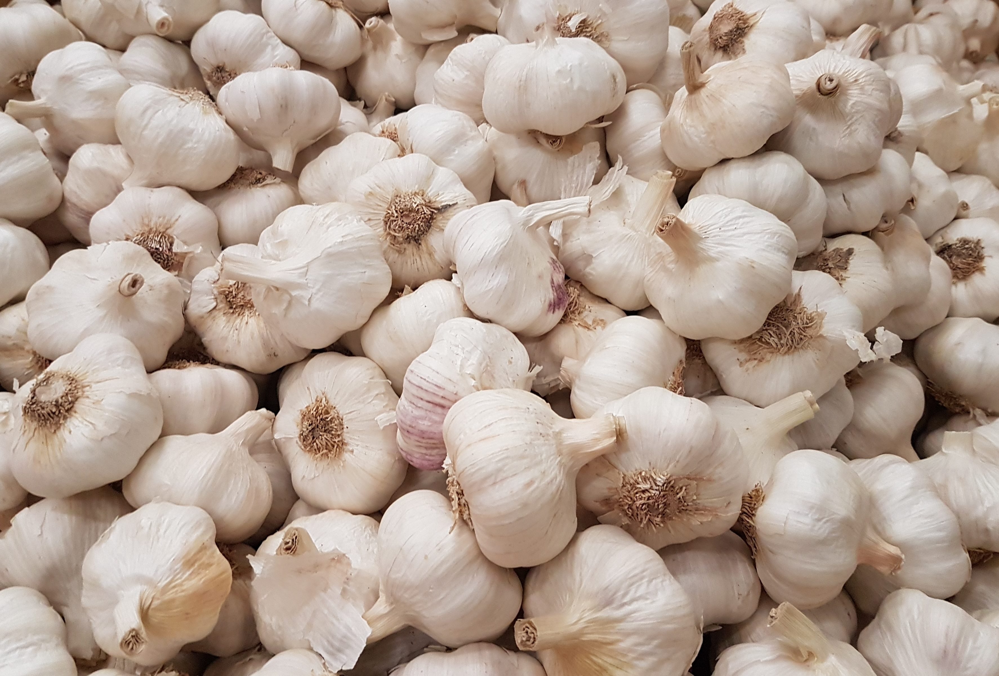

Su nombre cientifico es allium sativum. El ajo es mucho mas que un condimento. HAY DIFERENTES TIPOS DE AJOS CON DISTINTOS COLORES Y SABORES
PROPIEDADES DEL AJO El ajo crece en muchas partes del mundo y es un ingrediente popular en la cocina debido a su fuerte olor y delicioso sabor
Sin embargo, a lo largo de la historia, el ajo se ha usado principalmente por sus propiedades medicinales y beneficiosas para la salud . ORIGEN El ajo es cultivado desde tiempos inmemoriales por el hombre, y se cree que es originario del Suroeste de Siberia. Era muy apreciado por egipcios, griegos y romanos, que lo consideraban una excelente medicina. Actualmente se consume en todo el mundo, siendo cultivado sobre todo en Asia.Su uso fue bien documentado por todas la grandes civilizaciones, entre las que se incluyen los egipcios, los babilonios, los griegos, los romanos y los chinos .

La mayoría de los efectos que aporta a la salud se deben a uno de los compuestos de azufre que se forma cuando se pica, machaca o se mastica un diente de ajo. Este compuesto es conocido como alicina y es el responsable del distintivo olor del ajo.
Conclusión
Durante miles de años, existió la creencia de que el ajo tenía propiedades medicinales.
En la actualidad, estas propiedades han sido confirmadas por la ciencia y hoy sabemos que este alimento puede prevenir el Alzheimer, reducir el colesterol y la presión sanguínea y hasta mejorar tu rendimiento físico. En definitiva, el ajo puede prolongar tu vida. si te han interesado estas propiedades puedes decubrir mas en esta pagina web enlace a una pagina de salud sobre los ajos EN EL SIGUIENTE VIDEO SABRAS COMO CULTIVAR AJOS